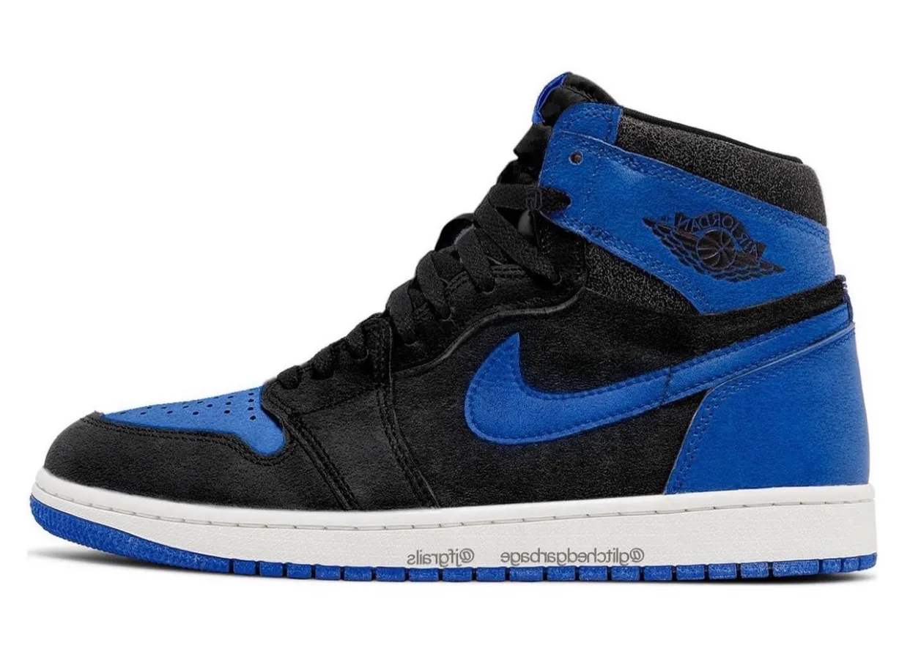

History About the Jordan 1:
The Jordan 1 is a basketball shoe designed by Peter Moore and manufactured by Nike, specifically for the legendary basketball player Michael Jordan. It was first released in 1985 and was the first signature shoe for Michael Jordan. At the time, Nike was a relatively new player in the basketball shoe market, and they were looking to make a splash with a new line of shoes designed specifically for Jordan. The Jordan 1 was designed to be both stylish and functional, with a high-top design for ankle support and a unique colorway that set it apart from other basketball shoes of the time.
Influential Collaborations:
Air Jordan 1 'Off White': Designed by Virgil Abloh, this collaboration features a deconstructed look with signature Off-White details such as zip ties and text on the shoelaces.
Air Jordan 1 'Cactus Jack': This collaboration features a unique colorway with earthy tones and a backwards Nike swoosh, as well as Travis Scott's signature Cactus Jack logo.
Air Jordan 1 'Fragment': Designed by Hiroshi Fujiwara, this collaboration features a simple yet sophisticated colorway with a lightning bolt logo on the heel.
Air Jordan 1 'Union': This collaboration features a two-tone colorway with vintage details and a stitched-on tongue, as well as Union's signature label on the heel.
Air Jordan 1 'Dior': This collaboration features a luxury twist with premium leather and Dior's signature monogram pattern on the Swoosh and tongue.
Personal Favorites:
The Jordan 1 is one of the most iconic and beloved sneakers of all time, and there are many different colorways to choose from. However, for me, the 'Chicago', 'Mocha', and 'Royal' Jordan 1s stand out as favorites. The 'Chicago' colorway, with its bold red and black accents, has become synonymous with the Jordan brand and is considered a must-have for any serious collector. This is also considered one of the classic Jordan's of all time. The 'Mocha' colorway, with its unique blend of earthy browns and white, offers a more subtle yet sophisticated look. Some may say that this pair looks a lot like the Jordan 1 Travis Scotts. I like to call these the poor mans Travis'. Hey, not everyone has a few thousands dollars around to spend on some shoes! I know I don't! Lastly, the 'Royal' colorway, with its classic combination of blue and black, exudes a timeless and versatile appeal that can be dressed up or down. These were my first ever Jordans that I bought with my own money. I'm glad I was able to experience camping out for some shoes with friends. Everytime I put those shoes on it takes me back to that cold but fun night. Each of these colorways offers a distinct personality that reflects the wearer's sense of style and taste.
Upcoming Jordan 1 Releases:

Air Jordan 1 High OG “Royal Reimagined”
Color: Black/Royal Blue-White
Style Code: DZ5485-042
Release Date: November 4, 2023
Price: $180
Travis Scott x Air Jordan 1 Low OG WMNS “Olive”
Color: Sail/University Red-Black-Medium Olive
Style Code: DZ4137-106
Release Date: April 26, 2023
Price: $150
Air Jordan 1 High OG WMNS “Satin Bred”
Colorway: Black/University Red/White
Release Date: October 18, 2023
Price: $180
Why the Jordan 1 may be one of the best Jordans:
Watch the video below to find out how the Jordan 1 was one of the best Jordans ever made!